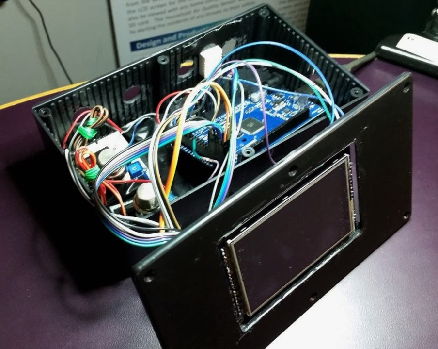

Our group of four wanted to design a better gas concentration sensor that can be used in homes or offices. We noticed most homes only have sensors to detect smoke and carbon monoxide, which is necessary but still miss some key gasses that can still be harmful. Most homes still use natural gas to provide heat on the stove and oven. Concentrations of this gas are not detected but can be smelled if in excess but at that point it might already be too late. This is how our design came to be, the Household Air Quality Sensor.
Our group picture and abstract of the project can be viewed at the UIC Engineering website. We are the group listed under Electronic Devices II and pictures of the entire event can be seen on that website.
Our task for creating this project was it had to be cheap and have the ability to expand if it was ever to go into commercial production.
In general, we wanted our product to be more interactive than a traditional gas detection unit. In doing so we went with a simple touch screen and self-designed, simple UI. Using this approach, it allows the user to see up to date information about the air quality in the current room and can also be scrolled through in order to see other concentrations. Also, with this approach one can get an early warning since the device gives current concentrations so action can be taken immediately instead of waiting for an alarm to sound as by that time it may be too late.
Hardware
Over the course of the project we had a few ideas on how we wanted the product to look and how to respond to interactions. We also strove for simplicity, expandability, and ease of use.
The Outside Look
For our initial design we had a simple LCD screen to display information, two buttons to scroll through a list of values displayed on the screen and three LED’s (green, yellow, and red) to visually display alerts when not actively looking at the device. This was a good start and already an improvement over existing devices but we took it a little further and added a single piece of hardware that is used every day by most people that replaced mostly everything, a touchscreen.
With the addition of the touchscreen it simplified everything and added a great deal of further interaction with the device. Touchscreens are inherently easy to use and understand so immediately our target audience was expanded. All functionality was moved to the touchscreen and a simple UI was designed so useful information could be seen at a glance (temperature, time, humidity, and a single gas). It was also larger and brighter so we could remove the LED’s and just change the color of the screen for alerts.
Internals
Designing for expansion was a goal from the beginning. We wanted the device to have numerous capabilities from the start. As a baseline for our prototype we went with a temperature and humidity sensor, three gas sensors from Grove (MQ brand), and an Arduino Mega. Each of the gas sensors also measured multiple values so they had more than just a single use. We also added the ability to log data to an SD card which can be removed and trend data can be viewed on your computer with two companion applications we designed.
As with this prototype it is a bit of a mess with all the wires but any future tasks would be shrinking the loose connections and having all the components on a single board and possibly a custom chip instead of a large microcontroller. We were also given other ideas to expand our design such as water and radon testing but these ideas were out of our knowledge range and given the time limit we were unable to do any research into those topics. But at the core of the project we wanted the ability to expand so any external devices should be pluggable through USB or some other universal connector as to do other monitoring easily.
Software
The base software to run the prototype was all done in the Arduino C based language and the code for the project can be viewed on my Github page. We went with Arduino as it has a very large community and lots of pre-built libraries for complicated pieces like the display and the sensors. Those libraries were provided from Adafruit and Seeed Studio for the touch screen and gas sensors respectively. Going this route, we didn’t need to spend a lot of time writing our own libraries and were able to focus on the core of the project by making sure everything worked together, was fast and efficient, and the touch interface easy to use and interact with.
I designed one of the companion applications and it has its own page here. It takes the data from the SD card and graphs it in an easy to read manner so trends can be seen. Since the device also measures temperature, using the graphing application allows the user to adjust their heating and cooling behaviors in order to save money!
At the expo we were able to present our project and the software applications that went along with at. We won our category and also won the Khounsary Award for Social and/or Environmental Advancement. It was a relief that everything went extremely well and that we came out on top especially when the competition had some really great projects.
The two pictures below show our presentation board and also our setup at the expo.